WireVitals · by Extrosy
WireVitals runs 27 checks in about a minute and tells you, in plain words, what is actually wrong with your connection — and keeps watching for hours when the problem only shows up sometimes.
Calls and games lag while the line is busy. Latency climbs at half your download speed — bufferbloat in the router. Turning on SQM / Smart Queue at about 85 Mbps would keep it flat.
How it works
"The internet is slow" can mean a weak Wi-Fi channel, a router that queues too much, a provider sharing one address between hundreds of homes, or a DNS server that has stopped answering. WireVitals checks each link in the chain separately, so the answer names the part that is actually broken.
Wi-Fi, router, DNS, the path out to the internet, NAT, speed, latency under load and more — each row appears the moment its check starts, with its findings as they come in.
A plain-English verdict names the root cause and what to do about it, and a card says what the line is good for right now — 4K video, calls, gaming, big uploads. Tap any row for the tables, charts and raw measurements behind it — and re-run that one check.
Leave the monitor running for hours, screen off, and get an alert the moment the connection drops. Every hiccup is logged with its time and its cause — so "it dropped at 9:40" becomes evidence.
Two devices
A speed test to a distant server cannot say which end of a connection is at fault. Put WireVitals on two devices: one waits, the other connects and measures everything between them — loss in each direction, a call's worth of packets scored like a real call, the speed each way with the delay timed as it climbs, and how long the network keeps a quiet connection alive. Every figure is drawn the moment it is measured.
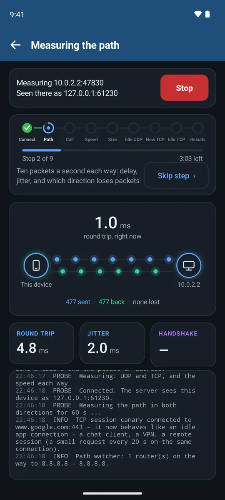
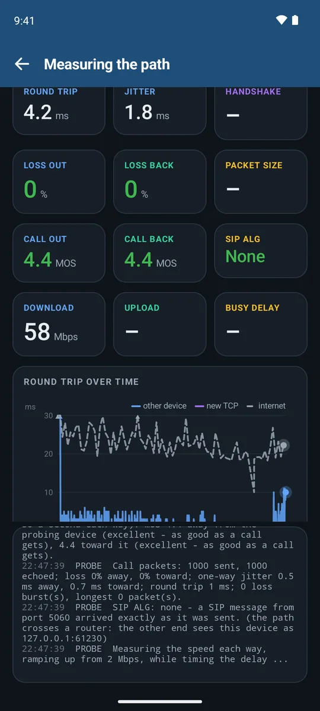
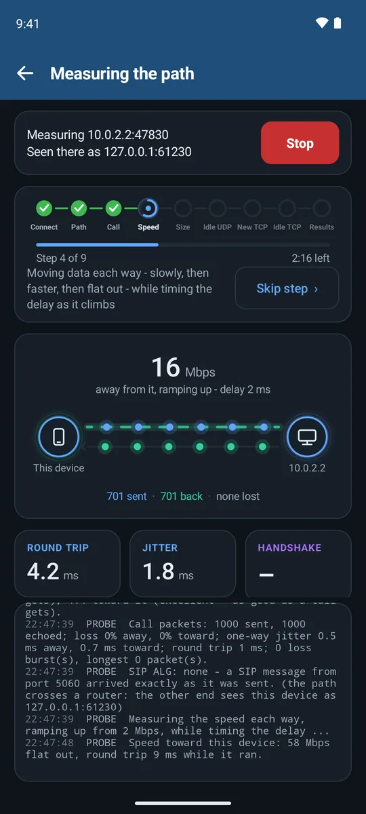
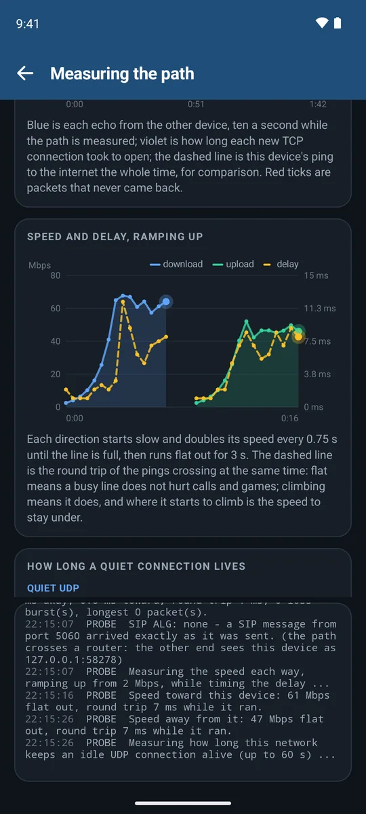
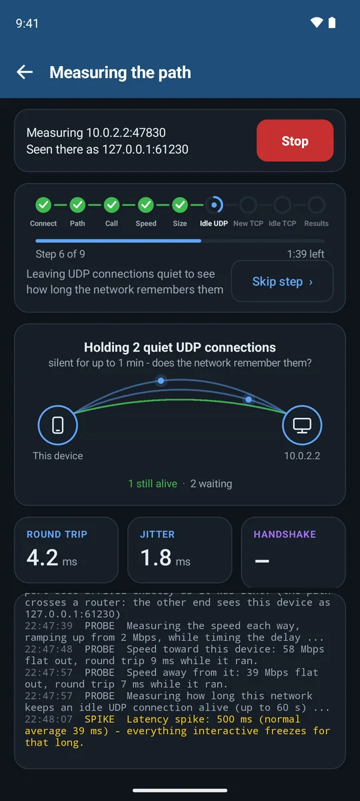
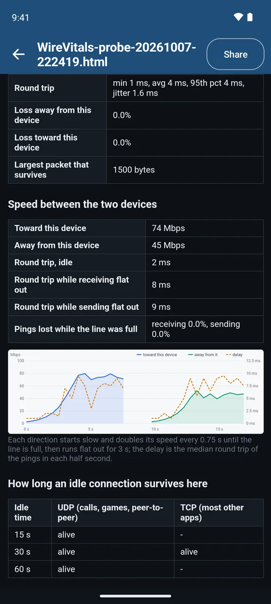
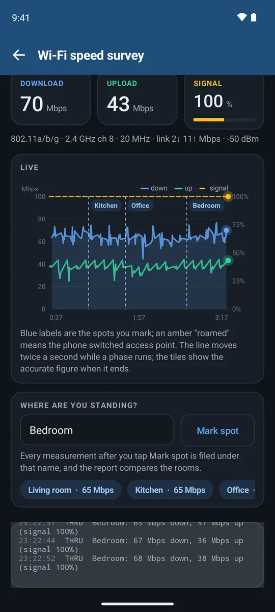
On one device, tap Wait for the other device. On the other, tap Find — on the same Wi-Fi it turns up by itself — then Start measuring.
The waiting side shows a key for the other to type; on your own Wi-Fi you can switch it off. To measure across the internet, it asks its router to open the port for the session.
Waiting is always free. On the connecting side a free run lasts 30 seconds; the full test is part of Pro.
Screens from the app in an Android emulator, measuring against a second device on the same computer — so the addresses shown are the emulator's own.
What it checks
Signal steadiness, band and channel width, how busy the access point says its airtime is, roaming, security, and how many MIMO streams the link really uses.
Loss and jitter to the router, the DHCP server and the lease it hands out, and any extra IPv6 router announcing itself on the network.
Ping, jitter and loss to the internet, a hop-by-hop traceroute that spots carrier-grade and double NAT, and a path-MTU test that finds the "black holes" that stall VPNs.
Your DNS against Google, Cloudflare and Quad9 — including whether your router quietly answers in their place.
Download and upload graphed every half second, then the line held at 25, 50 and 75% while latency is measured: bufferbloat, with the SQM setting that fixes it.
Real media tests against Microsoft Teams' and Google Meet's own relays — round trip, jitter and loss graded against Microsoft's published limits.
NAT type in console words (Open / Moderate / Strict), latency to every AWS game-server region, Steam relay and nearby Discord voice region, lag while the line is busy, and Xbox Live, PlayStation Network, Nintendo, Steam and Discord reachability.
Login-stealing name poisoners, forged DNS answers, certificates re-signed by something in the middle, HTTPS being stripped, and sign-in pages that ask for a password without encryption.
With a VPN up: does your web traffic, your DNS or your IPv6 leak around it?
In the app
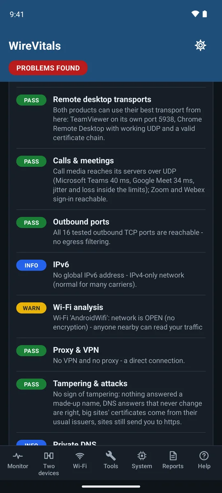
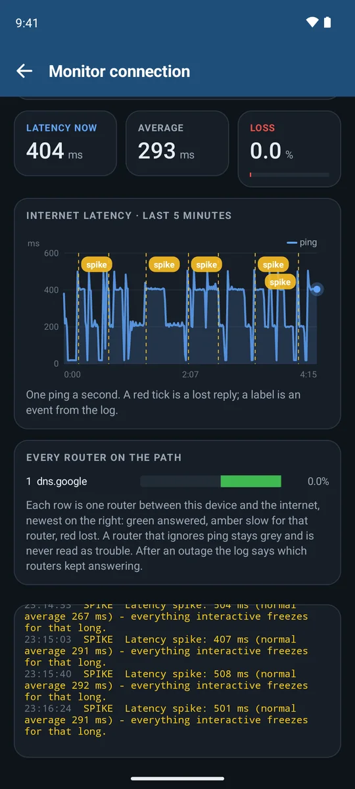
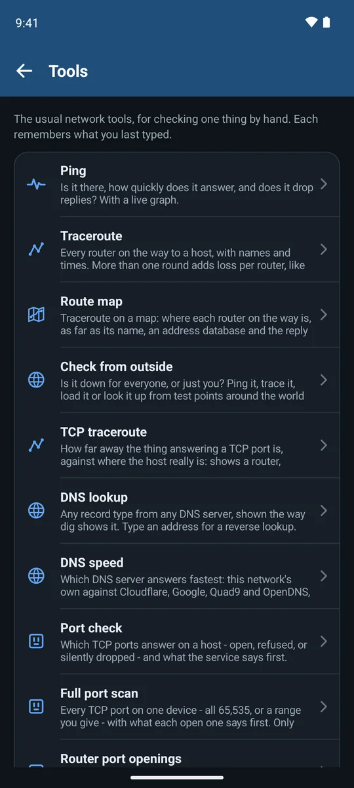
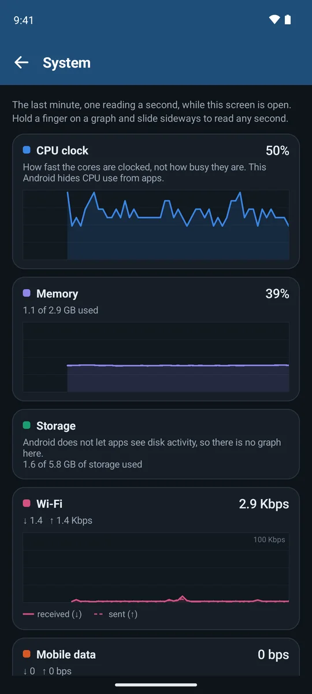
Emulator screenshots. The emulator's own route to the internet is slow, which is what the monitor is catching here.
Beyond the one-minute check
Internet pings, plus the watchers you pick — your router, a long-lived connection, a call-style UDP keepalive, DNS, Wi-Fi roaming — with a live latency chart and an event log you can share. It can time every router on the path the whole while, so an outage shows where it starts; add notes as you go, get alerts when it drops and comes back, and turn days of runs into an evidence report for your provider. Runs with the screen off.
Loss in each direction, how long the network keeps idle connections alive, a speed ramp that times the delay as it climbs, and a 20-second call test with a MOS voice score and SIP ALG detection — all drawn live.
Every nearby network drawn across the frequencies it really occupies, a spectrum waterfall, airtime per channel, and a walk-the-house speed survey (with a second device) that says whether a dead spot is weak signal or busy air.
Every device found, its maker and likely kind, open ports — and a NEW badge on anything never seen on this network before.
Every full check is kept. Charts and a day-by-day table show which problem keeps coming back and whether evenings are slower — with an optional check every few hours.
A minute of CPU, memory and traffic, one reading a second — because a phone flat out on CPU stutters calls exactly like a bad line.
22 tools for checking one thing by hand — and a home-screen widget and quick-settings tile that run a check in one tap:
Free, with an upgrade
Check Internet with every check, as often as you like; every tool but iperf3, the signal meter and Check from outside included; the Wi-Fi analyser, the device scan, System, reports, the widget and tile — and being the waiting side of a two-device test. Monitor runs last 30 minutes; a two-device test or a speed survey runs for 30 seconds, once every 15 minutes.
The monitor without a time limit, overnight included; alerts when the connection drops; every router on the path, over time; checks on a schedule; the evidence report for your provider; full two-device tests with call quality, speed and idle-connection tests; the speed survey without a limit; and iperf3 speed tests to any server.
Pro is a one-time purchase in the app, through Google Play. No account with us, nothing renewing, and the free part stays free.
Private by design
No account, no ads, no analytics, no trackers. Extrosy runs no servers and receives nothing from the app.
Reports, logs and history live in the app's private storage and leave only when you tap Share.
A network test has to talk to the internet. The privacy policy lists every test server the app contacts, and what it sends.